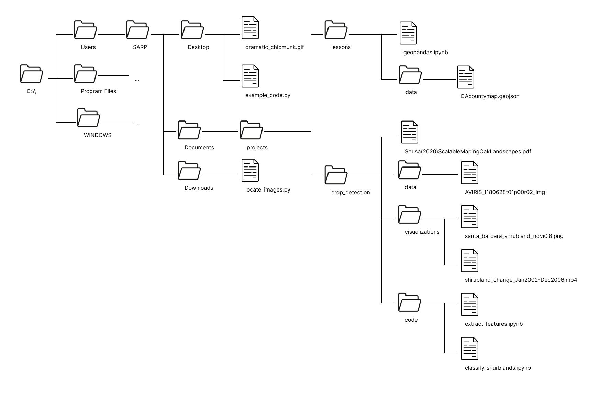

2.1 Problems#
pandas Practice
Part 1#
# Import the libary. You only have to do this once per file.
import pandas as pd
pandas Data Structures#
Use
pd.Dataframe()to convert the following dictionary into a pandas Dataframe. Assign it to a variable calledearthquake_df.
earthquakes_dict = {
'magnitude': [3.2, 2.6, 5.4, 6.0, 6.0, 4.5, 4.2],
'depth (km)': [6, 5, 3, 15, 14, 10, 8],
'region': ['California', 'Philippines', 'Philippines', 'Indonesia', 'California', 'California', 'California']
}
Print just the Depth column from the dataframe. What is the data type of that that subset of data?
Check your answer using type()
# Example
type(earthquake_df) # Put your answer to #2 in place of `earthquake_df`
---------------------------------------------------------------------------
NameError Traceback (most recent call last)
Cell In[3], line 2
1 # Example
----> 2 type(earthquake_df) # Put your answer to #2 in place of `earthquake_df`
NameError: name 'earthquake_df' is not defined
Accessing values in Dataframes#
print out the first row in the earthquakes dataframe
print out the 2nd-5th rows in the earthquakes dataframe
take the 2nd and 3rd rows of the earthquakes dataframe and assign them to a variables called
philippeans_only
What is the data type of the new
pilippeans_onlyvariable?
Inspecting and Aggregations#
Use
.info()to look up the data type of each of the columns in the dataframe
Note: An “object” data type isn’t one we have talked about before because it is specific to pandas. Pandas uses “object” as a datatype that is usually strings, but also includes any kind of mixed datatypes. Generally I just consider “object” datatype in pandas to mean “string”, since that is the most common case.
What is:
the strongest earthquake that is listed in this dataset (highest magnitude)?
the mean depth of these earthquakes?
Googling practice: Find the number of earthquakes that each of the regions in the dataframe had.
In other words answer the question, “how many earthquakes occured in California?”, “how many earthquakes occured in the phillipeans?”, etc.
If you’re looking for a place to start googling, try the phrase: “pandas dataframe number of occurances of a value”.
Hint Check out this piece of the internet
Filepaths#
You have been given a laminated piece of paper with the following file structure on it. This file structure is an abbreviated version of the file structure of the SARP laptops. ... represents additional folder contents which are not shown in this diagram.

To help you determine the filepaths you can use the provided laminated sheet with the filepath on it. For each path, do the following:
Circle the file that you are finding the path to
Circle the starting location of your file path. What will the starting location always be for an absolute filepath? For a relative filepath, underline the file you are starting from and circle the starting directory.
Write down the starting directory For a relative filepath. In this step there is 1 possible option for an absolute filepath and 2 options for a relative filepath
Trace the lines from the starting directory to the end file. Whenever you cross a directory add the name of the directory to your filepath, followed by a
\.Add the name of the file to the end of the filepath
Absolute Filepaths#
geopandas.ipynbshrubland_change_Jan2022-Dec2006.mp4dramatic_chipmunk.gif
Relative Filepaths#
example_code.py->dramatic_chipmunk.gifgeopandas.ipynb->CAcountymap.geojsonextract_features.ipynb->aviris_f1806t01p00r02_imggeopandas.ipynb->aviris_f1806t01p00r02_imgclassify_shrublands.ipynb->dramatic_chipmunk.gif
More Filepaths#
In the same folder as this one, there is a small file called filepath_practice.txt. Fill in the relative_filepath variable with a string of the relative path to that file. Run the pre-written code cell below it to read and print the contents of the text file.
relative_filepath = ''
# Don't this code here. Just change the `relative_filepath` variable above
with open(relative_filepath) as f:
line = f.readline()
print(line)
---------------------------------------------------------------------------
FileNotFoundError Traceback (most recent call last)
Cell In[4], line 4
1 relative_filepath = ''
3 # Don't this code here. Just change the `relative_filepath` variable above
----> 4 with open(relative_filepath) as f:
5 line = f.readline()
7 print(line)
File ~/miniconda3/envs/sarp/lib/python3.13/site-packages/IPython/core/interactiveshell.py:324, in _modified_open(file, *args, **kwargs)
317 if file in {0, 1, 2}:
318 raise ValueError(
319 f"IPython won't let you open fd={file} by default "
320 "as it is likely to crash IPython. If you know what you are doing, "
321 "you can use builtins' open."
322 )
--> 324 return io_open(file, *args, **kwargs)
FileNotFoundError: [Errno 2] No such file or directory: ''
Now find the absolute filepath of that file. Copy and paste the code cell above, change the relative_filepath variable, and run the cell again.
absolute_filepath = ''
# Don't this code here. Just change the `absolute_filepath` variable above
with open(relative_filepath) as f:
line = f.readline()
print(line)
---------------------------------------------------------------------------
FileNotFoundError Traceback (most recent call last)
Cell In[5], line 4
1 absolute_filepath = ''
3 # Don't this code here. Just change the `absolute_filepath` variable above
----> 4 with open(relative_filepath) as f:
5 line = f.readline()
7 print(line)
File ~/miniconda3/envs/sarp/lib/python3.13/site-packages/IPython/core/interactiveshell.py:324, in _modified_open(file, *args, **kwargs)
317 if file in {0, 1, 2}:
318 raise ValueError(
319 f"IPython won't let you open fd={file} by default "
320 "as it is likely to crash IPython. If you know what you are doing, "
321 "you can use builtins' open."
322 )
--> 324 return io_open(file, *args, **kwargs)
FileNotFoundError: [Errno 2] No such file or directory: ''
Part 2#
Please run the following cells to have access to the sample USGS data before you start the practice problems.
# Read in the data
water_vars = pd.read_csv('./data/englewood_3_12_21_usgs_water.tsv', sep='\t', skiprows=30)
# There are a lot of variables here, so let's shorten our dataframe to a few variables
water_vars = water_vars[['datetime', '210920_00060', '210922_00010', '210924_00300', '210925_00400']]
# Get rid of the first row of hard-coded datatype info
water_vars = water_vars.drop(0)
# Rename the columns from their USGS codes to more human-readible names
name_codes = {'210920_00060': 'discharge','210922_00010': 'temperature (C)', '210924_00300': 'dissolved oxygen', '210925_00400': 'pH'}
water_vars = water_vars.rename(columns=name_codes)
# Convert all numeric columns to the proper datatype
numeric_cols = water_vars.columns.drop('datetime')
water_vars[numeric_cols] = water_vars[numeric_cols].apply(pd.to_numeric)
water_vars
| datetime | discharge | temperature (C) | dissolved oxygen | pH | |
|---|---|---|---|---|---|
| 1 | 2021-03-12 00:00 | 44.5 | 8.1 | 8.3 | 8.1 |
| 2 | 2021-03-12 00:15 | 44.5 | 8.1 | 8.2 | 8.1 |
| 3 | 2021-03-12 00:30 | 44.5 | 8.1 | 8.2 | 8.1 |
| 4 | 2021-03-12 00:45 | 44.5 | 8.1 | 8.1 | 8.1 |
| 5 | 2021-03-12 01:00 | 44.5 | 8.1 | 8.1 | 8.1 |
| ... | ... | ... | ... | ... | ... |
| 142 | 2021-03-13 11:15 | 42.6 | 6.7 | 9.8 | 7.9 |
| 143 | 2021-03-13 11:30 | 42.6 | 6.7 | 9.9 | 7.9 |
| 144 | 2021-03-13 11:45 | 42.6 | 6.7 | 10.2 | 7.9 |
| 145 | 2021-03-13 12:00 | 46.5 | 6.7 | 10.3 | 7.9 |
| 146 | 2021-03-13 12:15 | NaN | 6.6 | 10.3 | 7.9 |
146 rows × 5 columns
Question 1#
A) Return the mean of all the columns
B) Return the mean of just the dissolved oxygen column
C) Return the total discharge from the full dataframe
D) Return the mean values of all the columns for the first 15 rows
Question 2#
Just like with dictionaries, the syntax for viewing a key (in dictionary)/column (in dataframe) is very similar to the syntax for creating a new key/column.
# Example: View a column
water_vars['temperature (C)']
1 8.1
2 8.1
3 8.1
4 8.1
5 8.1
...
142 6.7
143 6.7
144 6.7
145 6.7
146 6.6
Name: temperature (C), Length: 146, dtype: float64
# Example: Assign a column (Set all the values to 6)
water_vars['temperature'] = 6
Create a new temperature column which is the the temperature of the water in farenheit. Calculate the farenheit temperature using the celsius temperature in the temperature (C) column.
Question 3#
NaN values are an inevitable part of life when working with real data and its important to always be aware of them.
A) Use the function .isnull() to create a table full off Boolean values, indicating if that value is NaN or not
# Run this line to make sure you will be able to see more rows in the output
pd.set_option('display.min_rows', 40)
# Run this line after this problem if you'd like to reset your output display
pd.set_option('display.min_rows', 10)
B) Use the .dropna() method to replace all of the columns that have any NaN values. (That will require an argument in the function.)
C) Drop any rows that have NaN values. Assign that dataframe to a new variable called water_vars_nonan.
D) Replace all of the NaN values in this dataframe with a different value to indicate NaN: -999.
Google hint: try “pandas dataframe replace null values”
Stronger hint: here’s a page
(After completing this problem please re-run the original data import cells at the top of Part 2 to set your data back to using NaNs.)
Question 4#
Sort the rows in the dataframe by discharge, with the largest discharge on the top (descending order).
Google support: “pandas sort values” search. Or, this stackoverflow article would be helpful, the second answer in particular.
Question 5#
Before doing question 5 run the following lines of code. This will format our data a little nicer for this problem.
# Set a new index. Instead of integers 0+, use the datetime instead
water_vars = water_vars.set_index(pd.to_datetime(water_vars['datetime']))
# Drop the old datetime column
water_vars = water_vars.drop(columns='datetime')
A) While there isn’t a lot of control in it, we can use the dataframe method .plot() to make quick plots of our data. This isn’t the way you would make plots for presentations, but it can still be useful sometimes to help us get a sense of our data.
Try ising the .plot() method on the dataframe to make a quick plot. (Example: forecast.plot(), where forecast is the dataframe)
B) .plot() also works on a single Series. Try making a plot for just the disolved oxygen variable.
C) Looking at the first plot of all the variables we can see that discharge values are so high it shifts the graph so the other variables can’t be seen as well.
Create a plot that shows all the variables except for discharge. You can use the following line of code, which I used in the data cleaning lines for this problem, as a guide for dropping a single column from a dataframe:
# Droppping a single column, "datetime" from the water_vars dataframe
water_vars.drop(columns='datetime')